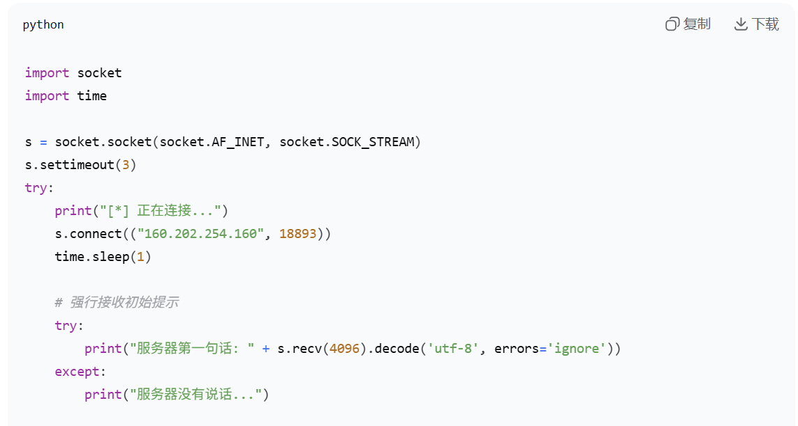
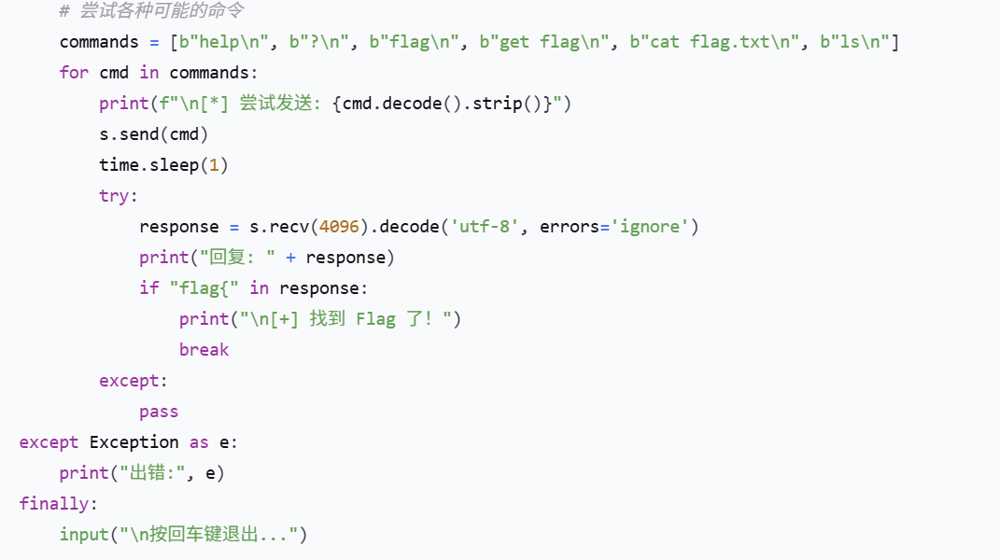

writeup-瑞士军刀
📌 题目信息
- 题目名： 瑞士军刀
💥 解题过程
- 启动场景后，发现是
nc加一串数字，喂给 DeepSeek 后了解到这是 IP 和端口号。 - 下载 netcat 工具。
- 尝试用 nc 连接靶机，但是不知道发送什么来获取 flag。
- 经过观察发现，题目详情里作者提示了
ls，可能是要发这个？
D:\netcat>ncat 160.202.254.160 18893
ls: not found - 发过去找不着，经过查询后得知，
ls是 Linux 系统用来“列出当前文件目录”的命令，而我用 Windows 系统直接给他发这个显然是不行的。 - 想到解决方案，通过在本地运行 Python 脚本的方式给它发送内容，并且读取 flag。

Python 脚本代码（上）

Python 脚本代码（下）
- 使用 DeepSeek 写的脚本成功看到文件目录，读取 flag 脚本，成功得到 flag。
📝 终端输出日志
1s : not found
dir : not found
ls : not found
python solve.py
sh: 4: python: not found
^C
D:\netcat>python solve.py
[*] 正在连接靶机
[*] 发送 'ls' 命令查看文件...
bin dev flag lib lib32 lib64 pwn1
[*] 尝试读取 flag...
flag[9e861196d5a73bcd]
cat: flag.txt: No such file or directory
按回车键退出...⚠️ 踩过的坑
- 下东西的时候记得关火绒（我的 netcat 被火绒杀了）。
- 跨平台不兼容：Windows 的换行符与 Linux 的冲突，导致 netcat 发送的 Linux 命令一直报错。
- 执行环境混淆：一开始没分清 Python 脚本是在自己的电脑运行，还是在靶机运行。
📚 学到的新知识
nc是可以建立 TCP 连接的强大工具。- Linux 命令：
ls（查看目录）、cat（查看文件）。 - Python 脚本可以作为网络工具的安全替代品，绕过本地环境限制。
🎁 获得奖励
1 金币 10 积分